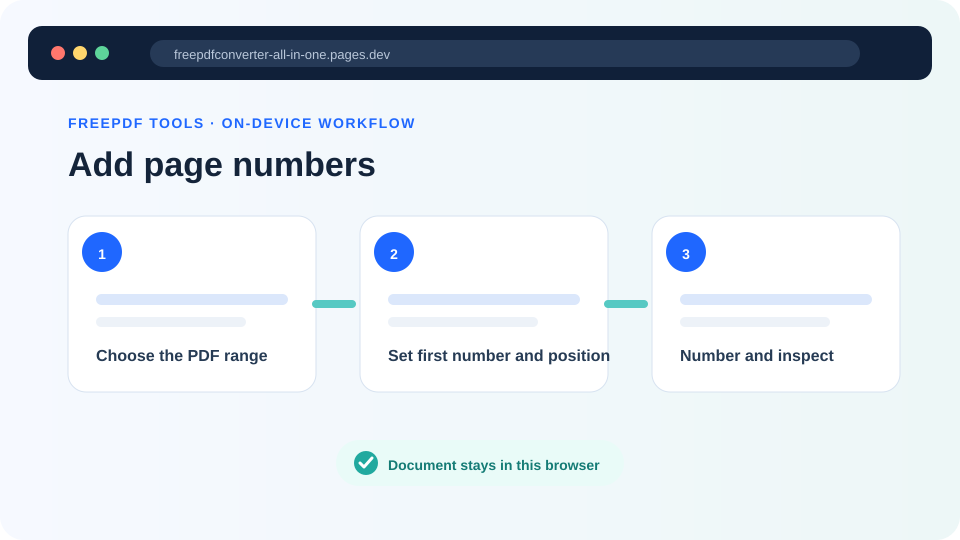
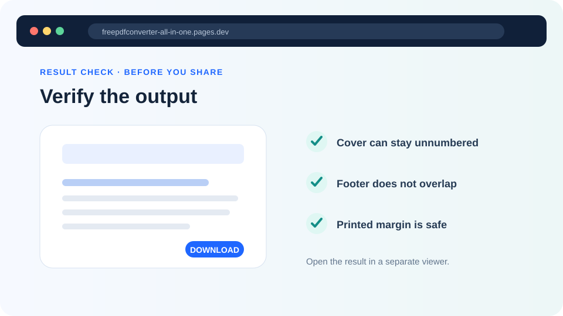

How to add page numbers to a PDF correctly
Number a report or application after its page order is final, while handling covers, front matter, existing footers and printer-safe margins.
Updated August 11, 2026 · By FreePDF Tools · 7 minute read


PDF positions and printed numbers are different
A PDF viewer counts physical page objects from the beginning. A document can print a different sequence: the cover may show no number, preliminary pages may use Roman numerals, and the main text may begin at 1. Decide which physical PDF page receives the first new number and what that visible value should be.
For example, if a cover and four contents pages precede the report, choose PDF page 6 as the first page to change and enter 1 as the first printed number. The tool then writes 1 on source page 6, 2 on source page 7 and so on. It does not infer a table of contents or existing page labels.
Add page numbers after organizing the document
- Finish merging, deleting, reordering, rotating and cropping first. Those changes can alter the sequence or visible page area.
- Open the Add Page Numbers tool and choose the final working PDF.
- Enter the first and last physical PDF pages to change.
- Enter the first visible number, then choose a top or bottom position.
- Start with 10–12 pt type and an 18–24 pt edge margin for ordinary documents.
- Create the numbered copy and inspect the first, last and longest number in the range.
Number the final PDF locally
The browser draws each number onto the selected page; the document is not uploaded.
Avoid existing headers, footers and print edges
The number is added on top of existing page content; the tool does not reflow the document. Bottom centre is a reliable default only when the source footer is empty. Use a corner when the centre contains a document code, footnote or confidentiality line. Test pages with large tables, full-bleed images or handwritten marks because they may have less clear space than ordinary body pages.
PDF coordinates are measured in points, where 72 points equal one inch. An 18-point margin is about 6.35 mm. A home or office printer often cannot print to the physical edge, so a larger margin is safer than an extremely small one. If the page has already been cropped, the number is placed relative to the visible page size reported by the PDF library.
Rotate sideways pages before numbering. A rotated page has a transformed viewing orientation, and a simple top or bottom coordinate may not match the reader's visual expectation in every complex file. Open the result rather than assuming uniform placement.
Visible numbers versus PDF page labels
This tool draws ordinary visible digits. It does not update the logical page-label tree a viewer may show in its toolbar, create Roman numerals, insert “Page 1 of 20,” rebuild bookmarks or update a table of contents. It also does not detect an existing number, so applying it twice can create duplicates.
Like any content change, numbering can invalidate digital signatures. Work on an unsigned copy or follow the signature owner's approved process. Keep the original and use a filename that makes the changed copy obvious.
Final check
- Confirm no cover or divider was numbered accidentally.
- Check the first and final printed values.
- Zoom in to ensure the number is crisp and not clipped.
- Print one test page if the final use is paper.
- Confirm page references in the contents still match.